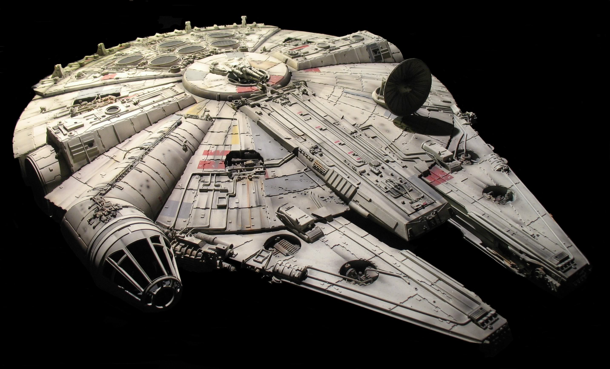
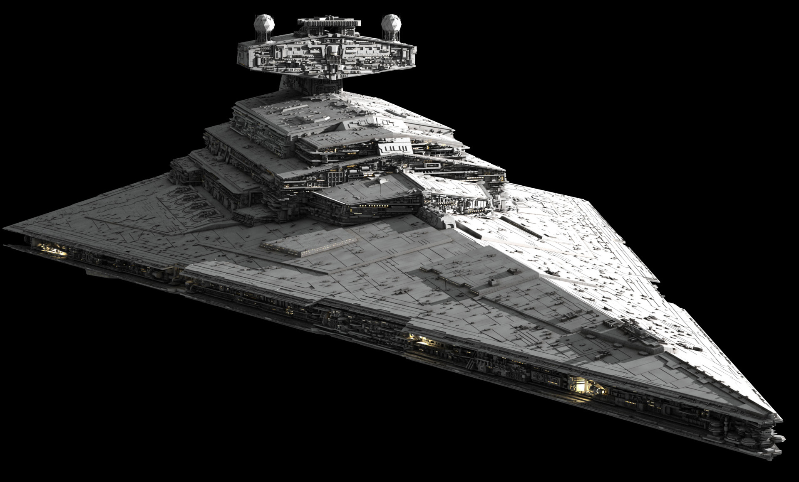
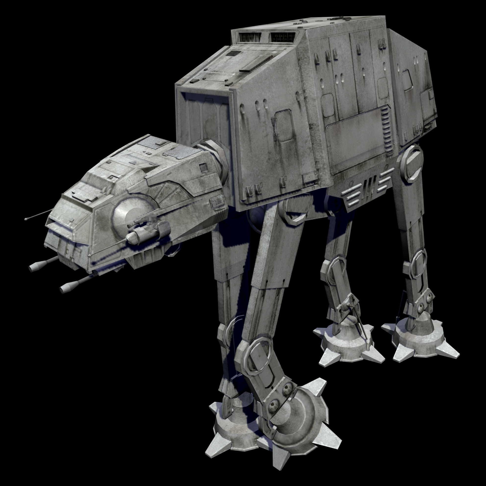

| vehicle | Description |
|---|---|
|  | The Millennium Falcon, originally known as YT-1300 492727ZED, was a modified YT-1300 light freighter with a storied history stretching back to the decades before the Clone Wars and the rise of the Galactic Empire. Manufactured by the Corellian Engineering Corporation in 60 BBY, the light freighter was first owned by Corell Industries Limited and underwent several name changes before being bought by the smugglers Kal and Dova Brigger in 48 BBY, and the ship eventually ended up as the property of the secretive Republic Group under the name Stellar Envoy by 29 BBY. The Envoy was destroyed in a collision with a bulk freighter above Nar Shaddaa, but it was rebuilt and served various owners under different names before Quip Fargil named it after the bat-falcon, and it eventually fell into the hands of Lando Calrissian after a game of sabacc—but Calrissian himself lost the ship in another game of sabacc to the smuggler Han Solo several years later. Solo and his Wookiee copilot, Chewbacca, became the ship's most famous and permanent owners, flying the Falcon during their smuggling careers and their subsequent work with the Alliance to Restore the Republic; a fateful trip to the planet Alderaan from Tatooine, ferrying Ben Kenobi and Luke Skywalker there, saw Solo and the Falcon embroiled in the Alliance's affairs and participating in the historic Battle of Yavin—during which Solo and Chewbacca flew the Falcon to save Skywalker from Imperial TIE fighters and allowed him to fire the shot that destroyed the Death Star. Despite Solo's insistence that he did not work for the Alliance, his misadventures continued to draw him back to the Rebels and Princess Leia Organa, and the Falcon was present for many pivotal battles of the Galactic Civil War such as the Battle of Hoth and the Battle of Endor—where Lando Calrissian and his copilot Nien Nunb flew alongside Wedge Antilles into the second Death Star's superstructure and fired the shots that spelled the massive battle station's destruction. |
|  | The Imperial I-class Star Destroyer, also known as the Imperial I-class Destroyer or the Imperator-class Star Destroyer, was an iconic class of warships designed by Lira Wessex and built by Kuat Drive Yards. The Imperial-class Star Destroyers, along with Imperial stormtroopers, represented the might of the Imperial Military throughout the galaxy during the reign of the Galactic Empire. The Imperator-class was originally used by the Republic Navy toward the end of the Clone Wars, and served alongside the Tector-class in a few task forces during the conflict. It was at the time one of the largest warship classes in the Republic Navy. It later became a mainstay of the Imperial Navy and was also fielded to a lesser degree by the Empire's successor-states. |
|  | The All Terrain Armored Transport (AT-AT) walker, also known as the Imperial Walker, was a major part of the Galactic Empire's motor-pool. It was one of the most heavily armored land vehicles in the Imperial Army, but was also known for its relatively slow speed. |
 |
A Death Star was a moon-sized Imperial military battlestation armed with a planet-destroying superlaser. The Death Stars, whose concept had been explored even before the Clone Wars, were the first in a long series of superweapons developed to execute the Tarkin Doctrine. The Death Star was designed to allow Emperor Palpatine to more directly control the Galactic Empire through fear. In most instances, a Death Star was to be commanded by a Moff. One Death Star was completely built by the Empire, with a second and third one never reaching full completion, as well as a prototype being in existence. In addition, a scaled-down version, the Tarkin, and a Hutt knockoff, the Darksaber, would be created by the Empire and Durga the Hutt, respectively. Both Death Stars were destroyed by the Rebel Alliance shortly after they became operational. The first Death Star was destroyed by Luke Skywalker, with the help of Han Solo, and the second Death Star was destroyed by Wedge Antilles and Lando Calrissian. Prior to the second Death Star being built, the Galactic Empire tested out a planetary superlaser for protecting its installations on the planet of Dubrillion. At some point after the second's destruction, the Rebel Alliance also attacked and destroyed a third Death Star. Following their destruction, other planet-devastating superweapons followed, including the Galaxy Gun, the Darksaber, the Sun Crusher, and the World Devastators. |
{kind=link}
{kind=link}
{kind=link}